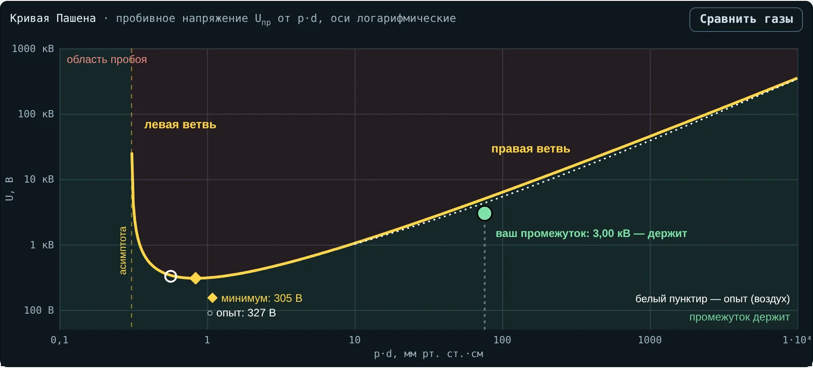
Техника высоких напряжений · лекция 4
Закон Пашена, давление и плотность газа
Почему прочность газа зависит от p·d, от погоды и высоты — от вакуумной камеры до элегазового КРУЭ
13.03.02 · интерактив «Закон Пашена» · по учебнику Важова и Лавриновича, разд. 1
Цели лекции
После пары вы сможете
1
Вывести формулу Пашена и посчитать по ней пробивное напряжение
2
Объяснить две ветви кривой и минимум Пашена
3
Применить закон подобия и объяснить разряд по длинному пути
4
Посчитать δ и поправку Kt при испытании
5
Объяснить, чем опасны потеря вакуума и утечка элегаза
6
Найти, при каком поле разряжается пора в изоляции
Два вопроса на всю пару
30 кВ → ?
Зазор 1 см в воздухе держит 30 кВ. Будем откачивать воздух. Прочность вырастет, упадёт или исчезнет?
325 В
Амплитуда сети 230 В — 325 В. Может ли она пробить чистый воздушный зазор хоть какой-то длины?
1 · Из лекции 2
Разряд самостоятелен, когда электрон «окупается»
γ(eαd − 1) = 1 ⇒ αd = ln(1 + 1/γ)
α — ионизация в объёме
Сколько пар ионов рождает электрон на 1 см пути: α/p = A·e−Bp/E
γ — вторичная эмиссия
Сколько электронов выбивает из катода один ион. Для воздуха — около 0,01
Итог
На пути через зазор нужно ln(1 + 1/γ) ≈ 4,6 ионизаций на один электрон
2 · Пашен, 1889
Uпр = f(p·d)
Для данного газа и электродов пробивное напряжение однородного промежутка зависит не от давления и расстояния по отдельности, а только от их произведения
p·d — сколько молекул стоит у электрона на пути через зазор
2 · Вывод
Три шага от Таунсенда к Пашену
1) αd = ln(1 + 1/γ)
2) α = A·p·e−Bp/E, E = U/d
3) Uпр = B·pd / [ ln(A·pd) − ln ln(1 + 1/γ) ]
Воздух: A = 15 1/(см·мм рт. ст.), B = 365 В/(см·мм рт. ст.), γ = 0,01 → ln ln(1 + 1/γ) = 1,529
2 · Разные газы
У каждого газа своя кривая и свой минимум
| Газ | A | B | Минимум, измерения | pd в минимуме |
|---|
| Воздух | 15 | 365 | 327 В | 0,57 |
| Азот | 12 | 342 | 251 В | 0,67 |
| Аргон | 12 | 180 | 137 В | 0,9 |
| Гелий | 3 | 34 | 156 В | 4,0 |
| Водород | 5 | 130 | 273 В | 1,15 |
| Углекислый газ | 20 | 466 | 420 В | 0,51 |
A в 1/(см·мм рт. ст.), B в В/(см·мм рт. ст.), pd в мм рт. ст.·см · Райзер; Naidu, Kamaraju
2 · Кривая Пашена воздуха · вкладка 1
Выше кривой — пробой, ниже — промежуток держит
◆ минимум по формуле · ○ минимум по измерениям · белый пунктир — пробой воздуха по измерениям · кружок — зазор 1 мм при 3 кВ: держит
2 · Пример
Зазор 1 мм в воздухе при атмосферном давлении
pd = 760 · 0,1 = 76
ln(15 · 76) = ln 1140 = 7,039
U = 365·76 / (7,039 − 1,529)
Uпр = 5,03 кВ
Сверка с опытом
Измерения: ≈ 4,3 кВ. Для воздуха при pd больше 10 используют формулу по опытам:
U ≈ 24,22·δd + 6,08·√(δd) кВ
1 см → 30,3 кВ: те самые «30 кВ/см»
3 · Пробег электрона
Пробой решают два числа
d / λe
Сколько пробегов
Число столкновений на пути ∝ pd. При 101 кПа λe ≈ 0,37 мкм: в зазоре 1 мм — ≈ 2700 пробегов
e·E·λe
Сколько энергии на пробеге
∝ E/p. Ионизировать N₂ нужно ≈ 15,6 эВ, O₂ — ≈ 12,1 эВ
3 · Правая ветвь
Плотный газ: пробегов много, энергии мало
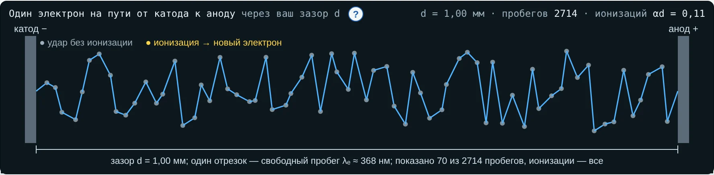
1 мм, 760 мм рт. ст., 3 кВ: ≈ 2700 пробегов по ≈ 1 эВ. Серые точки — удары без ионизации, ионизаций на пути αd ≈ 0,1.
Чтобы пробить, нужно αd ≥ 4,6 — большее поле: Uпр растёт с pd почти линейно.
3 · Левая ветвь
Разреженный газ: энергии много, столкновений мало
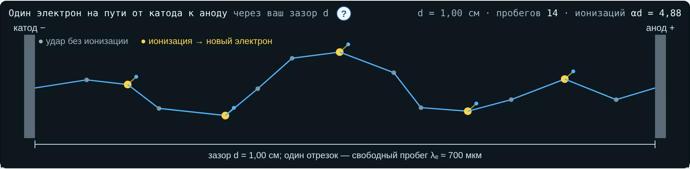
1 см, 0,4 мм рт. ст., 700 В: всего 14 пробегов, из них ≈ 5 ионизаций (жёлтые). Нужно ≈ 4,6 — едва хватает. Уменьшаем давление — Uпр растёт.
При pd меньше 0,31 мм рт. ст.·см формула не даёт пробоя ни при каком U — асимптота кривой.
3 · Минимум Пашена
Наименьшее напряжение, которым можно пробить газ
(pd)min = e·ln(1 + 1/γ)/A Umin = (e·B/A)·ln(1 + 1/γ)
По формуле
305 В
при pd = 0,84 мм рт. ст.·см
По измерениям
327 В
при pd = 0,57 — зазор ≈ 7,5 мкм в атмосфере
Реальный случай · быт и электроника
325 В не пробивают воздух. Откуда же искра в выключателе?
Закон Пашена
Амплитуда 230 В — 325 В, минимум воздуха — 327 В. Изолирующий воздушный промежуток такой сеть не пробьёт ни при каком зазоре.
Дуга размыкания
Разряд начинается из замкнутого состояния: ток идёт через последнюю точку контакта, металл плавится и испаряется, в парах металла горит дуга. Механизм Таунсенда здесь ни при чём.
4 · Закон подобия
Давление ×k, зазор ÷k — напряжение то же
0,5 МПа · 2 мм
модель, тот же Uпр
Число пробегов ∝ pd и энергия на пробеге ∝ U/(pd) не изменились. Так испытывают уменьшенные модели газовой изоляции — с оговоркой: в сжатом газе выше 0,5 МПа уже влияют электроды.
4 · Парадокс левой ветви · вкладка 1
В разреженном газе длинный путь пробивается легче
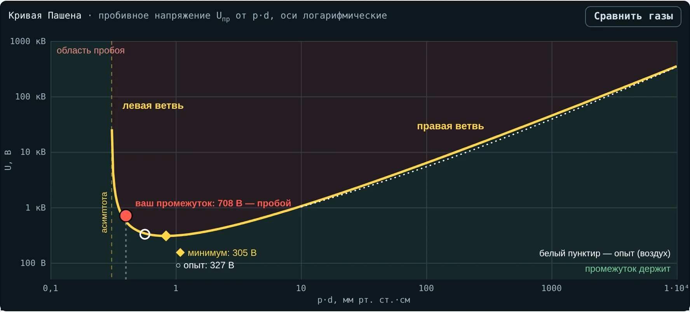
Воздух, 0,4 мм рт. ст.:
1 см → 556 В
2 см → 306 В
Разряд обходит: по стенкам камеры, между выводами, между дальними частями электродов.
4 · Границы формулы
Где закон Пашена работает плохо
Постоянные A и B
Верны в ограниченном диапазоне E/p: для воздуха при атмосферном давлении формула завышает на 10–15 %
Сжатый газ
Выше ≈ 0,5 МПа влияют эмиссия с микроострий электродов и пылинки — прочность ниже расчётной
Глубокий вакуум
Газа почти нет — прочность задают электроды: эмиссия и пары металла
5 · Плотность воздуха
Прочность воздуха следует за его плотностью δ
δ = (p/760) · 293/(273 + t)
| Погода | p, мм рт. ст. | t, °C | δ |
|---|
| Нормальные условия | 760 | 20 | 1,00 |
| Апатиты: мороз, антициклон | 775 | −30 | 1,23 |
| Оттепель, циклон | 735 | +1 | 1,03 |
| Лето, жара | 750 | +28 | 0,96 |
5 · Поправки при испытаниях · ГОСТ 1516.2, МЭК 60060-1
Норма задана для 760 мм рт. ст., 20 °C и 11 г/м³
Kt = δm·kw, k = 1 + 0,012(h/δ − 11), g = U50/(500·L·δ·k)
Короткий однородный
g > 2: m = 1, w = 0. Kt = δ, влажность не учитывают
Длинный неоднородный
g ≈ 1: m = w ≈ 1. Важны и плотность, и влажность — вода тормозит стримеры
Как применять
Подаём U = U0·Kt. Измеренное приводим: U0 = U/Kt
5 · Мороз в Апатитах · вкладка 2
Короткий промежуток +23 %, длинный — лишь +6 %
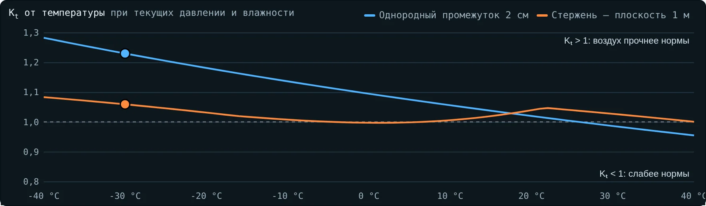
6 · Высота над уровнем моря
Выше 1000 м изоляцию усиливают
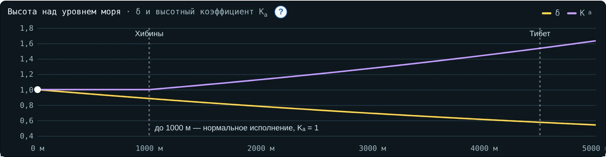
δ ≈ e−H/8150
Ka = e(H−1000)/8150
2500 м: Ka = 1,20 — уровень 75 кВ превращается в 90 кВ.
Хибины, 400–1000 м: прочность ниже на 5–12 %.
Реальный случай · Тибет, 2011
Линию ±500 кВ построили на ±400 кВ
Что случилось
Линия постоянного тока Гэрмо — Лхаса: 88 % трассы выше 4000 м, перевал Тангула — 5300 м. Напряжение снизили с ±500 до ±400 кВ — в том числе из-за внешней изоляции на высоте. Изоляторы — 12–14 м вместо 9,75 м на равнине.
Физика
δ ≈ e−4500/8150 ≈ 0,58: разрядные напряжения воздушных промежутков на 40 % ниже, чем у моря. Удельную длину пути утечки увеличили в 1,28 раза.
7 · От вакуума до сжатого газа · вкладка 3
Зазор 10 мм: вакуум, минимум, атмосфера, КРУЭ
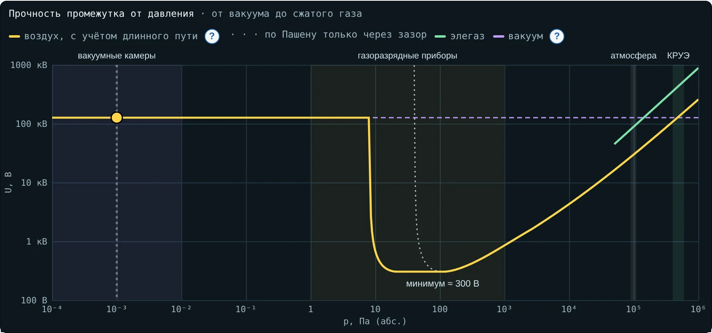
Вакуум ≈ 130 кВ (оценка) → потеря вакуума ≈ 300 В → воздух 0,1 МПа ≈ 30 кВ → элегаз 0,5 МПа ≈ 440 кВ
7 · Вакуумная камера выключателя
Немного воздуха опаснее, чем много
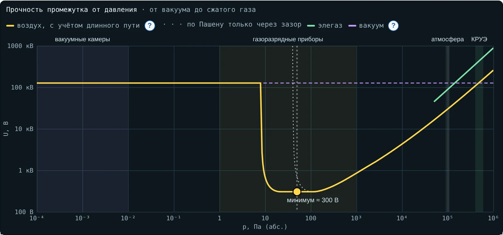
Натекло до 50 Па: pd ≈ 0,4 — у минимума, прочность ≈ 300 В.
Камера, полная воздуха, держит ≈ 30 кВ.
В эксплуатации камеру проверяют напряжением на разомкнутых контактах — 75–80 % заводского испытательного.
7 · Элегаз в КРУЭ
Прочность почти пропорциональна давлению
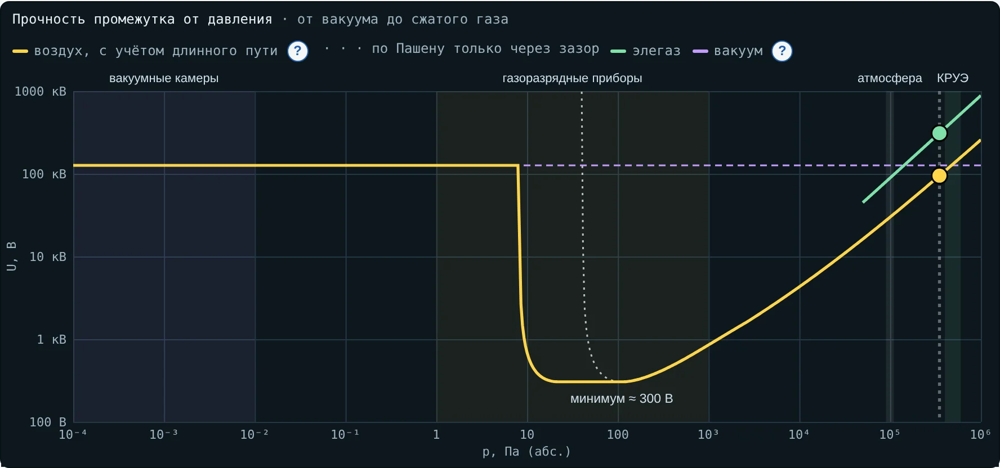
Электроотрицательный газ: SF₆ захватывает электроны, при равном давлении в ≈ 3 раза прочнее воздуха.
E ≈ (230p + 1,61)/26 кВ/мм
0,5 → 0,35 МПа: 443 → 310 кВ, −30 %.
CIGRE 2026: перекрытие в отсеке КРУЭ 400 кВ из-за незамеченного снижения давления.
Реальный случай · 19 сентября 2023
Ракета Electron потеряла вторую ступень из-за дуги
Что случилось
На 151-й секунде упало напряжение питания второй ступени. Наиболее вероятная причина — дуга, закоротившая аккумуляторы. Совпали: гелий и азот в отсеке, дефект изоляции жгута, неблагоприятная форма напряжения.
Физика
При подъёме давление в отсеке падает, pd зазоров проходит минимум Пашена: прочность — сотни вольт. Решение Rocket Lab — сохранять давление в отсеке.
8 · Газ в твёрдой изоляции · вкладка 4
Пора разряжается раньше изоляции
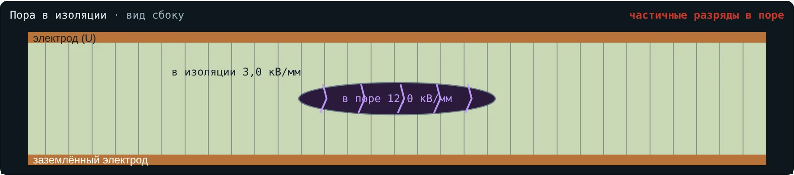
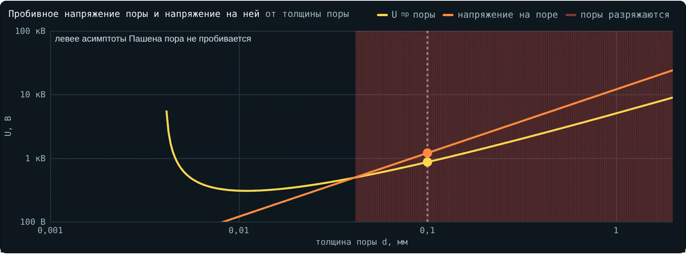
Eв = εr·Eиз
Эпоксид, εr = 4, пора 0,1 мм: Uпр = 865 В, разряды с 2,16 кВ/мм в изоляции.
Мелкие поры прочнее по напряжённости, но норма задаёт наибольший размер поры.
8 · Разреженный газ в поре
Меньше давление в поре — ближе к минимуму
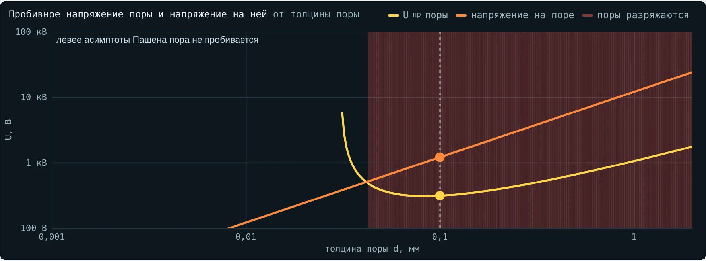
Газ, оставшийся в поре после вакуумной заливки, разрежен: pd меньше — разряжаются и более мелкие поры.
Реальный случай · авиация
Частичные разряды в проводке на высоте
Что заметили
Лаборатория Lectromec: напряжения возникновения и погасания ЧР в проводах и кабелях на высоте ниже, чем у земли, — «до определённого предела».
Физика
Воздух в порах и зазорах изоляции разрежен — pd идёт к минимуму Пашена. Дальше левая ветвь: напряжение снова растёт. Это и есть «предел».
Практика · вкладка 6 и пособие студента
Десять задач
1. Миллиметровый зазор
6. Зазор летом в циклон
2. Где минимум при атмосферном давлении
7. Поправка при испытании
3. Трубка с разреженным воздухом
8. Оборудование для высокогорья
4. Давление худшего случая в отсеке
9. Утечка элегаза
5. Морозный антициклон в Апатитах
10. Пора в литой изоляции
1. Почему Uпр зависит только от pd?
5. Как применить Kt при испытании?
2. Что ограничивает правую и левую ветви?
6. Зачем Ka выше 1000 м?
3. Почему 230 В не пробивают воздух?
7. Чем опасна частичная потеря вакуума?
4. Почему разряд идёт по длинному пути?
8. Почему пора разряжается раньше изоляции?
Тест — вкладка 7: 5 вариантов по 15 вопросов, оценка в конце
Главное
Uпр однородного промежутка зависит только от p·d; минимум воздуха ≈ 327 В
Справа мало энергии на пробеге, слева мало столкновений — и длинный путь легче короткого
Прочность воздуха ∝ δ: испытывают с поправкой Kt, высоту учитывают через Ka
Вакуум, элегаз и поры в изоляции — разные точки одной кривой
Дома: задачи вкладки 6, тест — вкладка 7. Следующая лекция — коронный разряд